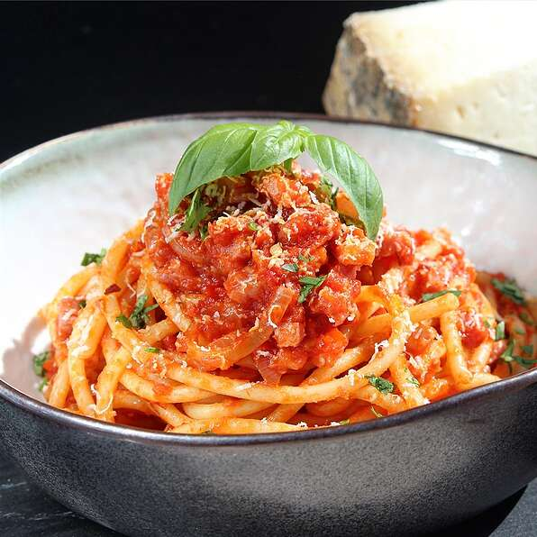

Bucatini All'Amatriciana

This classic sauce takes its spiciness from black pepper and dried chiles and its depth of flavor from guanciale, Italian salt-cured pork jowl. If you can't find it, use pancetta, which is available at better supermarkets.
Ingredients
- 5 ounces bucatini pasta
- ¼ cup extra-virgin olive oil
- 3 crushed garlic cloves
- 1 ½ ounces guanciale (cured pork cheek), sliced
- ¼ cup sliced red onion
- 1 pinch red pepper flakes
- ½ (8 ounce) can crushed San Marzano tomatoes
- salt and ground black pepper to taste
- 1 ounce freshly grated Pecorino Romano cheese